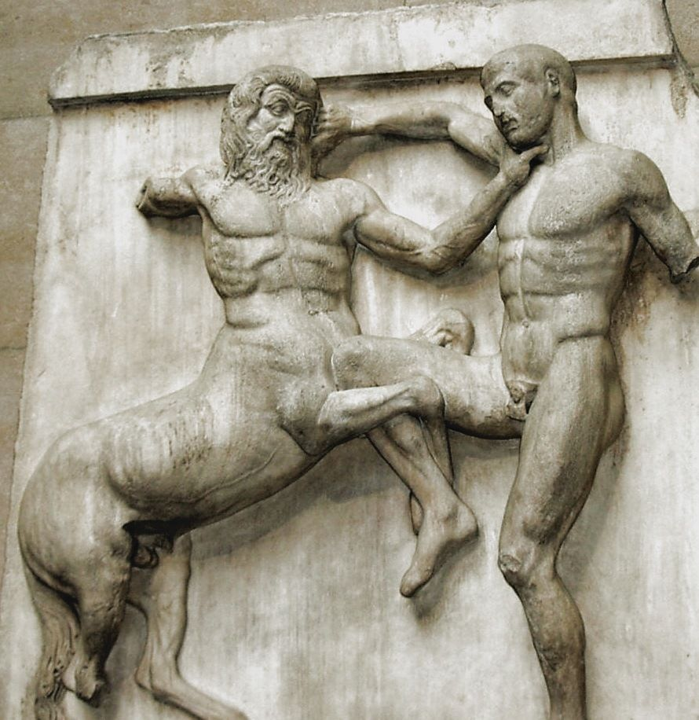
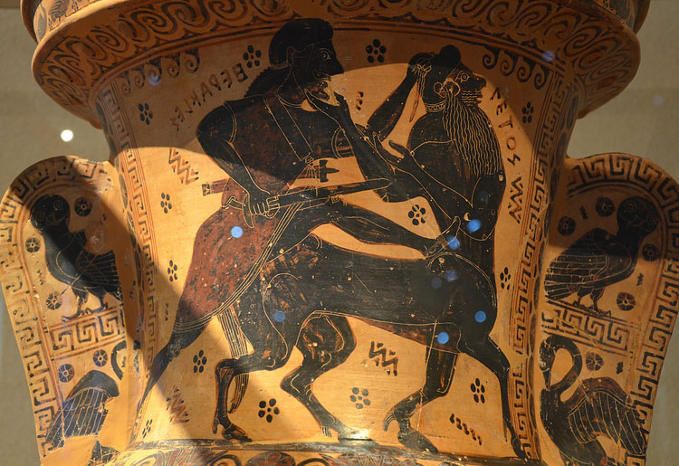

Vol. 1: Mitologia Griega
Centauros
Los centauros son criaturas de la mitología griega con torso humano y cuerpo de caballo, simbolizando la dualidad entre la razón y el instinto salvaje. Habitaban principalmente los montes de Tesalia (Magnesia) y se originaron de la unión de Ixión con una nube, Néfele. Generalmente salvajes, salvo excepciones como Quirón, representan la barbarie.


La contraparte o principal oponente de los centauros en la mitología griega son los Lapitas. Los lapitas eran un pueblo tesalio que luchó contra los centauros en la famosa contienda conocida como la Centauromaquia.